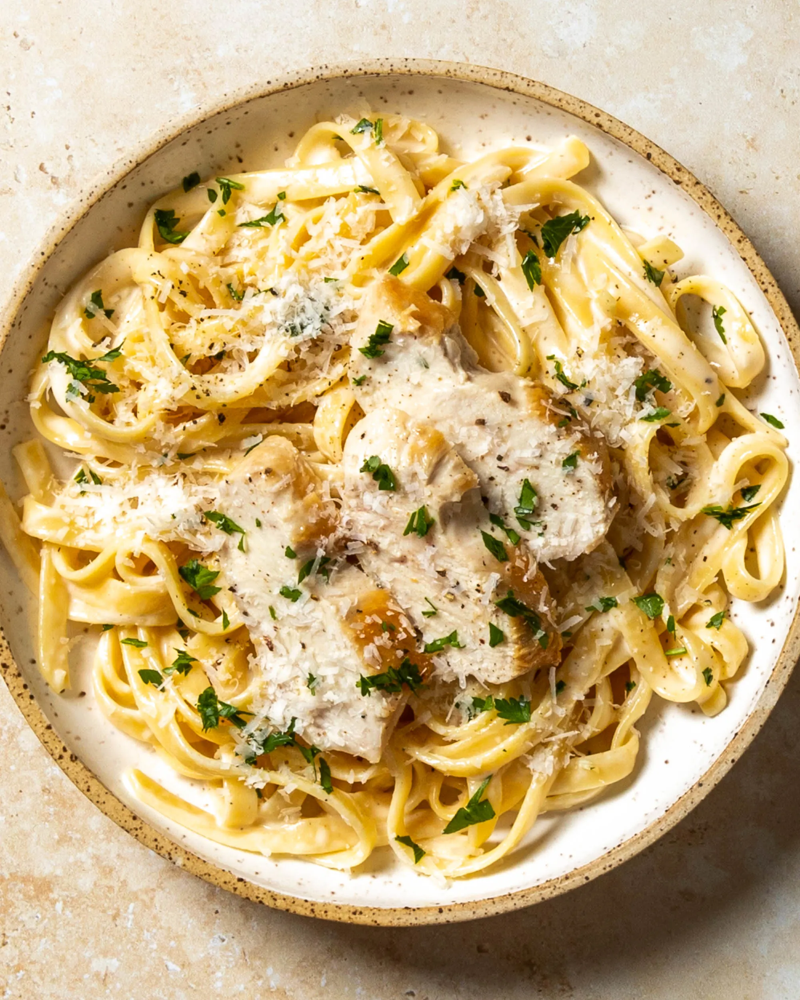

Chicken Alfredo Pasta Recipe

Fettuccine Alfredo con Pollo
Chicken Alfredo Pasta is a rich and comforting Italian-American classic
made with tender strips of seared chicken, silky fettuccine noodles, and a
luscious Parmesan cream sauce. The buttery Alfredo sauce is infused with
garlic and clings perfectly to the pasta, creating a smooth and velvety
bite every time.
Balanced with the savory flavor of golden chicken and finished with fresh
parsley and extra cheese, this dish is both simple to prepare and
indulgent enough to serve as a restaurant-style meal at home.
Ingredients
-
For the Chicken:
- 2 tbsp olive oil
- 2 boneless, skinless chicken breasts
- Salt and black pepper, to taste
- 1 tsp garlic powder (optional)
-
For the Pasta:
- 300 g (10 oz) fettuccine pasta
- Salt, for boiling water
-
For the Alfredo Sauce:
- 4 tbsp unsalted butter
- 3 cloves garlic, minced
- 1 ½ cups heavy cream
- 1 cup freshly grated Parmesan cheese
- Salt and black pepper, to taste
- Fresh parsley, chopped (for garnish)
Steps
-
Cook the Pasta:
- Bring a large pot of salted water to a boil.
-
Add fettuccine pasta and cook until al dente (about 8–10 minutes).
- Drain and set aside, reserving ½ cup of pasta water.
-
Cook the Chicken:
- Season chicken breasts with salt, pepper, and garlic powder.
- Heat olive oil in a skillet over medium-high heat.
-
Sear chicken for 5–6 minutes per side until golden brown and fully
cooked.
- Remove from pan, let rest, then slice into strips.
-
Make the Alfredo Sauce:
- In the same skillet, melt butter over medium heat.
- Add minced garlic and sauté for 1 minute until fragrant.
- Pour in heavy cream and bring to a gentle simmer.
- Stir in Parmesan cheese until sauce is smooth and creamy.
- Season with salt and black pepper to taste.
-
Combine Everything:
-
Add cooked pasta to the skillet and toss to coat in Alfredo sauce.
- If sauce is too thick, add a splash of reserved pasta water.
- Top with sliced chicken.
-
Serve:
- Garnish with fresh parsley and extra Parmesan cheese.
- Serve warm and enjoy!
To return to the landing page: Landing page